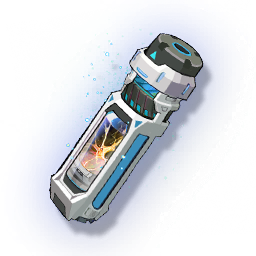

Medium Resonance Potion
Development Materials

Can add 3000 experience points for Resonator.
A catalyst that can further enhance frequency perception. The original ingredient ratio has been improved during the preparation, which is more suitable for Resonators with more solid foundation. This catalyst has almost achieved the perfect balance of performance and cost, and has no shortcomings except for the bland taste that has always been criticized by users.